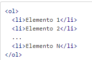
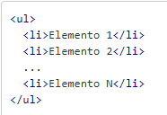

Listas HTML
Las listas en HTML nos permite crear conjuntos de elementos en forma de lista dentro de una página, todos los cuales irán precedidos, generalmente, por un guión o número.
Tipos de Listas
- Listas Ordenadas
- Listas desordenadas
- Listas de Definicion
Listas Ordenadas
Las listas ordenadas en HTMLson aquellas que nos muestran los elementos de la lista en orden. Para representar el orden tendremos los elementos numerados. Es decir, cada uno de los elementos irá precedido de un número o letra que establezca su orden.
Ejemplo
- Manzana
- Mandarina
- Fresa
- Uva
Listas Desordenadas
Las listas desordenadas en HTML nos sirven para mostrar los elementos sin ningún tipo de orden, simplemente precedidos por una viñeta que puede ser un punto. Para representar los elementos de la lista desordenada utilizamos el mismo elemento que con las listas ordenadas, es decir, el elemento 'li'.
Ejemplo
- Manzana
- Mandarina
- Fresa
- Uva

Listas de Definicion
Las listas en HTML de definiciones en HTML nos sirven para montar listas en las que tenemos la estructura valor y definición. Suelen ser listas para definir términos, como si fuese un diccionario, si bien pueden ser cualquier par valor-definición.
Ejemplo
- Leon
- Carniboro
Informacion sacada de: http://www.manualweb.net/html/listas-html/